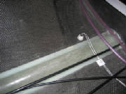
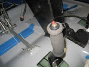
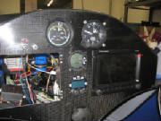
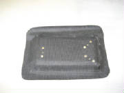
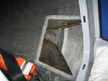
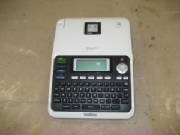

|
Flight Instruments
When I bought
my Sinus kit, I omitted the Brauniger primary flight display that is standard for Pipistrel aircraft at this point.
I plan to purchase instruments of my own selection, lay out the panel and do my own installation. In keeping with standard
practice for selecting and purchasing anything electronic these days, I'll delay my choice until the last moment, so as to
take advantage of ever-increasing capability for little or no increase in price.
My initial intent was to install
the Dynon FlightDEK-D180, which combines compass, airspeed, altimeter, artificial horizon (and more) for flight instrumentation,
plus engine instrumentation, all in one bright, crisp 7-inch diagonal sunlight-readable display. When I flew with Tine
Tomazic at the factory, he said that they were evaluating the Dynon unit, and he was very favorably impressed with its display
clarity and its in-flight performance. The Dynon should weigh less and take up less panel space than all the separate
conventional instruments. In 2010, however, Dynon announced their SkyView system, which I have selected for installation.
I'll mount the wet compass that came with the kit, and will add backup "steam gauge" altimeter and airspeed,
although some would argue that for the strictly VFR flying that I plan to do, the backups aren't necessary. We're
all taught to fly and land safely with no instruments at all, right? As they say even for large aircraft design, "Simplicate
and add lightness." I'll also have a total energy variometer for soaring, from which there are many
to choose, and I don't have any special preference at this point. Michael Coates recommends the Borgelt B40, but I will
probably install a Tasman all-electronic unit (no separate flask required) made in Australia that has become popular among
soaring pilots.
For GPS and moving map cross-country navigation, I plan to install the AvMap EKP-IV.
For communications, I recently took advantage of an introductory special from X-Air Australia to purchase a pair
of their headsets, and while I was doing that, I also ordered an XCOM 760 VHF radio. With the radio I included a wiring harness tailored for the Sinus, an antenna and a capacitor that goes
with the installation.
I'll leave a spot on the panel for an autopilot, but am undecided about whether
or not to install one. I'll see how the Sinus handles on cross country flying before I decide. Michael thinks
it's best to have the factory install autopilot servos when ordering the kit, because their preferred servo location is
difficult to access after the fuselage shell is done, but we'll see...
Emergency Locator Transmitter (ELT)
In the USA, the FAA has recently mandated replacement of all 121.5 MHZ ELTs with 106 MHz ELTs. This makes sense,
since 121.5 MHz is no longer being monitored for ELT alarms; however, it raised widespread objections at the cost involved,
so the FAA has softened their position, making the old ELTs legal, although they have never been particularly effective for
search and rescue. Paul Remde of Cumuls Soaring likes the ACK E-04 ELT, which operates on both 406 MHz and 121.5 MHz, although it is not ready for shipment yet. I'll keep an eye on it, since
I can defer that purchase for awhile yet.
Initial Panel Layout ideas
Today (4 Jan 2007) I got some very useful ideas from Janusz, a Pipistrel enthusiast in Australia. He is contemplating
purchase of a Sinus, and while doing so, he has put some thought into a potential suite of instruments and avionics, and has
worked on a panel layout. Coincidentally, Janusz had selected almost exactly the same combination as I had. He
even went so far as to do some electronic cutting and pasting to see how the instruments might be arranged on a Sinus panel.
This picture shows his suggestion, and I like it very much. I doubt that I'll install a backup artificial horizon,
however.
Janusz also suggests powering the panel such that the Dynon and Avmap in the center can be shut
down during soaring flight, thus using battery power only for the vario and radio (and perhaps transponder, depending on your
local airspace regulations).
Thanks, Janusz -- great ideas! Isn't the web a wonderful resource?
August 6th, 2010 2.0 hours - Install VHF antenna
ground plane
I had purchased an X-COM 760 VHF radio from X-COM Avionics, which fits into a 2 1/4" hole in the instrument panel and
combines radio and intercom functions in one unit. The installation instructions for the X-COM 760 VHF radio call for
a 20" diameter ground plane. I used the cut-and-try method to make a ground plane template out of cardboard that
will cover most of the top of the fuselage in the top of the baggage compartment and conforms to the outline of the parachute
tube. I then cut the ground plane from a piece of .016" aluminum and held in in place with a bolt through the hole
in the fuselage where the antenna coax cable connector will go. I used several dabs of silicone between the ground plane
and the fuselage skin to secure it into position.
August 7th, 2010 0.9 hours - Install VHF antenna
I temporarily installed the BNC cable connector on the antenna, centered the antenna in the hole in the top of the fuselage,
then drilled four mounting holes and mounted the antenna with 8-32 stainless steel machine screws. The antenna is electrically
connected to the ground plane by the mounting screws.
August 7th, 2010 1.5 hours - Mock up instrument
panel
I have tentatively decided on the instruments and avionics that I will install, so I made some cardboard cutouts and
taped them to the instrument panel to ensure that they are visible and can be reached for operation. For primary
flight information I will have two Dynon SkyView 7-inch displays. My original choice was a single 10.2-inch SkyView display, but it seemed a bit crowded for simultaneous display of
flight information, navigation information and engine monitoring. It was also a single point of failure that would leave
me stranded waiting for repair if it fails at some en route location. The dual displays let me spread the information
between them and gives me a backup in case of failure. I am also planning to purchase the newly announced
Dynon transponder, which can be controlled from the Dynon SkyView display, so I don't need a separate spot for it on the panel. The
radio is an X-COM Avionics 760, which is small, light weight, has a very comprehensive set of features, and includes a built-in intercom that will accept
a separate audio input for listening to music. Headset jacks will go in the upper cockpit bulkhead between the seats. When soaring I plan to turn off the Dynon displays, so I will install separate airspeed, altimeter and variometer.
The airspeed indicator is a Winter W6413, which spreads 0 to 140 knots over a 510 degree dial rotation, with expanded scale at the lower airspeeds for more precise
flying while soaring. The altimeter is from United Instruments. The variometer is a Tasman V2000, which is all electronic, using pressure transducers rather than the traditional accumulator flask. It has a nice audio
implementation and has become fairly popular in the soaring community. I plan to purchase these three instruments
from Cumulus Soaring. Their web site is very comprehensive, well organized with excellent reference information and handy comparisons among
various manufacturers and products. Paul Remde, the owner, is also very knowledgeable and helpful. The
pictures below show the cardboard instruments taped to the panel in an arrangement that I believe will work for me.
There is ample room to add a few switches as well.
December 5th, 2010 1.1 hours - Build shelf for Dynon
ADAHRS
The Dynon ADAHRS (Air Data, Attitude & Heading Reference System) module must be mounted so that it is horizontal and aligned
with the aircraft axes when in level flight. First I raised the tail until the reference jig supplied with the kit indicated
level, then I raised one wheel slightly until the cross-tubes at the top of the cockpit were level. Then I cut a piece
of foam to fit between the aft cockpit bulkhead and the ballistic chute tube, leveled it and taped it in place.
I
covered the entire shelf and the surrounding surfaces with packing tape. This will allow me to apply a carbon fiber
layup over the shelf, the remove the cured layup and trim it before final installation.
December 19th, 2010 1.5 hours - Build shelf for Dynon
ADAHRS
I covered the ADAHRS shelf form with aluminum foil, then trimmed the foil to the approximate size to cover the shelf, overlap
the edges and form flanges to bond the shelf to the surrounding structure. Then I cut two pieces of carbon fiber cloth
for the layup. I cut the cloth so that the weave was at 45 degrees to the edges of the shelf. This helps
the layup to drape over the edges, into the corners and form flanges against the structure.
I traced the foil form
onto a large piece of aluminum foil on my work table, then laid the first layer of cloth in place. I squeegeed epoxy
gently into the carbon fiber cloth until it was saturated, then laid the second layer of cloth in place and squeegeed more
epoxy into that layer. With both layers saturated and the excess epoxy removed, I laid another piece of aluminum on
top, so that the layup was sandwiched between the two layers of aluminum foil.
Then I trimmed the whole
sandwich to the outline of the original foil form. I removed the aluminum foil from the bottom of the sandwich, placed
it onto the form and pushed it into the corners and over the edged. I removed the top layer of foil and then used a
disposable brush to push the carbon fiber layup into final position for curing.
|
| Shelf layup with packing tape for parting layer |
December 24th, 2010 1.5 hours - Complete shelf for Dynon
ADAHRS
I popped the carbon fiber layup free of the foam and packing tape form, then trimmed the edges. I removed a portion
at the corner where the cockpit bulkhead meets the fuselage side, to leave an opening for the fuel line and pitot-static lines.
Then I sanded the surfaces where the shelf flanges meet the surrounding structure, using 80 grit paper to cut through the
surface shine of the layups. Finally I bonded the shelf in place with a mix of epoxy and flocked cotton ("flox")
and checked to see that the shelf is level before leaving it to cure.
|
| Bonding areas sanded to remove shine |
|
| Bonded in place with flox and leveled |
January 8th, 2011 0.8 hours - Mount ADAHRS
I taped the ADAHRS in place on its shelf, with the ADAHRS centerline parallel with the aircraft centerline. I drilled
3/16" holes and bolted it in place with stainless steel (non-magnetic) 10-32 machine screws and stainless nylon lock
nuts.

January 9th, 2011 2.2 hours - Install GPS and OAT probe
Jonas Boll offered the suggestion that the GPS antenna/receiver module could be mounted beneath the aileron linkage cover
on top of the fuselage. Because this over is fiberglass, rather than carbon fiber, this was an excellent suggestion.
I drilled holes and mounted the Dynon GPS with 8-32 flat head machine screws.
I decided to mount the outside air temperature probe on the bottom of the fuselage beneath the baggage compartment, offset
to the left side. This keeps the OAT probe out of direct sunlight, and not downstream from the engine exhaust.
I drilled at 3/8 inch hole in the fuselage and mounted the probe. Then I routed the wires to the ADAHRS, securing them with
adhesive mounts and tie wraps. I inserted the pins into the connector and plugged the connector into the ADAHRS.

January 16th, 2011 1.5 hours - Secure GPS wiring, mount
ADAHRS
I used foam-backed adhesive mounting blocks and zip ties to secure the wires from the GPS and routed them forward to the instrument
panel.
I aligned the ADAHRS with the aircraft axis and mounted it with stainless steel machine screws.


January 21st, 2011 3.5 hours - Total energy, pitot and
static lines
I used a compression fitting, Aircraft Spruce part number 266P-03x02 and a polyethylene 1/8" pipe thread fitting to connect
the total energy probe pneumatic line to clear 1/4" Tygothane tubing, Aircraft Spruce part 0585-071. I routed the
Tygothane tubing under the cockpit floor to the instrument panel for later connection to the variometer.
I also
used Tygothane tubing and polyethylene fittings to route pitot and static lines from the right wing route to the ADAHRS and
under the cockpit floor to the instrument panel. At the low point in the pitot and static lines behind the cockpit bulkhead
I installed drains with 1/8" brass pipe caps to be used for draining any accumulated water from the lines. The
ADAHRS has one unused port since I am not installing the Dynon angle of attack probe
January 23rd, 2011 2.8 hours - Install head phone
jacks and VHF antenna coax
I unpacked the pre-wired radio harness from X-Com Avionics and routed the headset wires from the instrument panel under the
floor and installed the jacks in the aft cockpit bulkhead between the headrests. The assembled harness from X-Com is
highly recommended if you use the X-Com 760 radio. They make a harness that is tailored for the Pipistrel cockpit, including
the headset jacks, stick-mounted push-to-talk switches, intercom pilot-passenger isolate switch, power and music input wires.
I crimped a BNC connector onto the end of the RG-400 VHF antenna cable coax, connected the cable to the antenna
and routed the cable down the back of the cockpit bulkhead and forward to the instrument panel.

February 4th, 2011 1.5 hours - Total energy tubing
I received the altimeter and variometer from Cumulus Soaring. I found that the pneumatic fitting on the variometer was
too small for the 1/4" Tygothane tubing, so I ordered some 3/16" neoprene tubing, Aircraft Spruce part 05-00200
and some 3/16" fittings. I replaced the 1/4" total energy tubing to the instrument panel with the 3/16"
tubing and added a drain fitting in the baggage compartment.
February 5th, 2011 6.5 hours - Instrument panel
With one Skyview display, VHF radio, altimeter and variometer in hand, I concluded that it was time to commit to a panel layout
and cut mounting holes. I found that I had wrongly assumed that the Tasman variometer needed a 3 1/8" hole, but
it actually mounts in a 2 1/4" hole. This allowed me to put both the variometer and the radio between the displays,
leaving only the altimeter and airspeed indicator to mount above the Skyview displays.
I used a standard
hardware store hole saw to cut the instrument holes in the panel, starting slightly undersize, then opening the up with my
Dremel tool to get a good fit. For the SkyView panel cutouts I drilled a small hole at each corner, then cut between
them with a jigsaw. The carbon fiber panel ruined one jigsaw blade, but I consider them disposable.
February 6th, 2011 1.2 hours - Install radio push-to-talk
switches
I routed the pre-wired push-to-talk switches under the floor, fished the up through the control sticks and mounted them in
the caps on top of the sticks. I had to enlarge the holes in the caps a bit to fit the switches.

February 13th, 2011 3.7 hours - Install Dynon modules
and fuel return sensor
I mounted the Dynon Engine Monitor module and one Skyview backup battery on the left side of the instrument panel support
pylon, and mounted the second backup battery on the right side.
I added aluminum fittings to the Dynon fuel flow sensor that I will use to measure fuel returned to the tank. The fittings
are 1/4" to 1/8" adapters, Aircraft Spruce part AN-912-1D and hose nipple, Aircraft Spruce part AN840-4D.
The Skyview system accepts inputs from the the fuel supply sensor and the fuel return sensor, then calculates net fuel flow
as the difference between the two flows.
I mounted the fuel return sensor in the return line behind the cockpit
bulkhead, then added extension wires and routed them under the floor to the instrument panel.
I added adhesive
mounting pads in the baggage compartment and secured all the wires, fuel lines and pitot-static lines with zip ties.
February 17th, 2011 1.6 hours - Install Skyview anchor
nuts
I mounted 6-32 anchor nuts (Aircraft Spruce part K1000-06) on the instrument panel, using flat head rivets, then mounted the
left SkyView display.
February 18th, 2011 3.0 hours - Install VHF antenna
coax connector, ammeter shunt and avionics ground bus
I cut the RG-400 VHF antenna cable coax cable to length and crimped the BNC connector to the end of the cable.
I installed the shunt for measuring alternator current load. I used two rivnuts and machine screws to mount it on the
electric panel. The alternator output will be routed through the shunt. Two wires from the shunt to the Dynon
Skyview will allow the Skyview to measure and display alternator load.
I installed a ground bus for the avionics, using materials kit AEC9031 purchased from the Aeroelectric Connection.
The bus is based on a 37-pin D-Sub connector. The kit contains a female connector with pins installed and all of the
pins tied together on the back side. This connector is mounted on a phenolic board. The avionics ground connections
are crimped to male D-Sub pins that are then inserted into the male connector. The whole bus is grounded to the aircraft
ground using five 20 AWG wires to ensure adequate ground current capacity.
I mounted the female connector
to the Pipistrel electrical panel, which provides a common ground point, and is connected to engine ground. Then I installed
a 10-32 rivnut in the panel and mounted the ground bus adjacent to it. I used two rivnuts and machine screws to mount
the bus. Then I crimped ring terminals onto five 20 AWG wires and bolted them to the rivnut ground point. Finally, I
crimped male D-Sub pins onto the five ground wires and inserted them into the male ground bus connector.
March 4th, 2011 2.1 hours - Connect EGT probe wires
I finished routing the EGT probe wires,
cut them to length, labeled them with printed labels under clear heat shrink tubing, crimped D-sub pins onto the ends, inserted
them into the 25-pin D-sub connector, installed the connector back shell and inserted the connector into the mating receptacle
on the Dynon EMS module.
March 5th, 2011 9.5 hours - Wiring
I ordered a ten-circuit extension
fuse block, part FH10, from B&C Specialty Products and installed it on the backside of the firewall near the cockpit floor.
Then I continued routing and marking wires, crimping D-sub pins and assembling the D-sub connectors.
To label the wires, I printed suitable
legends in font sizes of 6 pt, 8 pt and 11 pt. Then I cut them out of the paper and secured them to the wires with
clear heat shrink tubing. It's easy to label even 22 gauge wire in this manner.
March 6th, 2011 5.5 hours - Install Manifold Absolute
Pressure sensor and engine warning light
I received a manifold absolute pressure
(MAP) sensor from Dynon, which I mounted behind the instrument panel and then ran some Tygothane tubing from the sensor to
the cross tube between the two Rotax carburetors. I crimped pins onto wires and hooked the sensor to the Dynon EMS D-sub
connector.
I continued the Dynon connector wiring
and installed an engine warning red LED light with its push-to-test button. I also mounted the radio intercom on-off-isolate
switch.
March 11th, 2011 6.5 hours - Install airspeed indicator,
transonder ident switch, radio ground
I received the Winter airspeed indicator
from Cumulus Soaring. I ordered it pre-marked with properly colored airspeed arcs for the Sinus airspeeds called out
in the Pipistrel pilot manual. I drilled the mounting holes, enlarged the panel opening slightly to match the face of
the indicator, mounted it and hooked up the pitot and static lines.

One of the pins that came with
the MAP sensor was the wrong type, so I had ordered a replacement. I crimped the pin on the wire, assembled the connector
and snapped it onto the sensor.
March 13th, 2011 1.5 hours - Begin slip/skid indicator
installation
I laid out the mount for the slip-skid
indicator above the pilot Skyview display and drilled the mounting holes for reference when cutting the opening.
March 25th, 2011 2.5 hours - Install slip/skid indicator
and test Dynon SkyView system
I created a jig for the slip-skid indicator
opening, cut out the panel opening with my Dremel cutting wheel, used a file to get to the final size, riveted nut plates
for the mounting screws, and mounted the indicator.
I hooked the Dynon EMS and ADAHRS connectors
to the pilot display and applied power. The display came up, but showed big red X's with failure messages for the
EMS and ADAHRS. After browsing through the Dynon setup menus, I found a message saying that the EMS and ADAHRS firmware
was out of date, so I initiated an update from the firmware stored in the display. At that point the EMS and ADAHRS
were recognized by the display and started working.
March 26th, 2011 6.0 hours - Avionics setup and operation
checks
I hooked up a 13.8 volt shop power
supply to continue checking out the avionics.
I checked proper operation of the variometer and radio. I was
able to receive a few snatches of airborne radio traffic, but the plane is in my shop, which is under my house, so reception
is nil, but I got acquainted with the functions and checked out the intercom function, including the music input and pilot
isolate function.
I was surprised to see that the GPS eventually found the satellites and oriented itself, despite
being completely enclosed in my shop. I downloaded the latest software from Dynon, including some default Rotax engine
sensor mapping parameters. From there is was straightforward, although time-consuming, to work through the entire Dynon
setup. So far I am very impressed with the Dynon system, which seems well-conceived and well-executed. The
Skyview display can be reconfigured at the press of a button. The pictures below show some of the various modes.
The entire display can be devoted to Primary Flight Display (PFD), Engine Monitoring System (EMS) display, or GPS moving map.
It can also display all three at once, or any two at a time. In the sample below that includes the map, almost all of
the terrain is colored red, because the display uses red to indicate terrain that is at or above the current altitude, and
I'm sitting on the ground. The PFD can be configured to show the terrain in the background, as it appears in front of
the aircraft, or as an artificial horizon without the terrain. It was also encouraging to see
that the temperature readings (OAT, CHT, EGT, coolant, oil) all agreed pretty closely with the actual temperature in my shop.
Also, the MAP sensor and the SkyView altimeter setting agreed with the reading on my pneumatic altimeter. The voltmeter
and ammeter functions also appear to be accurate. The Dynon web site doesn't say much about how to calibrate the sensors
or define things like resistance-temperature curves, thermocouple characteristics, etc. What I found is that Dynon has
done all this already, and you simply have to select the particular sensor from the Skyview menu. The screen setup functions
also provide several options for the size and shape of the individual sensor displays and their placement on the screen. Each
sensor can be separately configured for range values, colors and alarm points.
|
| Me in the cockpit, working on Dynon setup |

|
| primary flight display, engine instruments and map |
|
| PFD with terrain background |
|
| PFD without terrain background |
April 1st, 2011 3.2 hours - Install second Dynon display
and transponder
I installed the second SkyView display on the copilot side, connected the wire harnesses and an ethernet cable between the
displays that transfers the setup information from one to the other. Then I applied power, performed the basic setup
and let the displays synchronize themselves. After that, everything appears to be working normally.
I created a platform for mounting the
transponder by cutting a foam pad 3/8" thick, covering the bottom of the fuselage with clear tape for release, then laying
up carbon fiber cloth over the foam and extending out from the edges onto the fuselage bottom by an inch or so. I covered
the whole thing with peel ply and left it to cure.
April 2nd, 2011 9.5 hours - Transponder installation
I popped the transponder platform layup
free of the parting tape, trimmed the edges, drilled mounting holes for the transponder tray, devised a way to capture a tray
ground wire under one of the mounting bolts, installed nut plates on the bottom of the tray, roughed up the fuselage floor
with sandpaper and mounted the tray with epoxy and cotton flock.
I routed the transponder wiring, labeled the wires,
crimped D-sub pins on the the transponder end and assembled the 25-pin D-sub connector, and connected the other ends of the
pins to the power switch, ground, and the Skyview wiring.
I arranged the wiring behind the instrument panel and
secured it neatly with tie-wraps and adhesive pads.
I installed a coax connector on one end of the transponder
antenna cable. I will wait to mount the other connector until I have installed the antenna, which is on backorder at
Aircraft Spruce.

April 3rd, 2011 6.0 hours - Transponder installation
and flap position potentiometer
I removed the transponder mounting tray,
connected a terminal lug to the ground wire for the tray, captured the lug under one of the mounting screws and reinstalled
the tray.
I tried a couple of different mounting
positions for the flap position potentiometer and settled on attaching it to the back of the aft cockpit bulkhead between
the seats, with a linkage to the flap handle. I built a linkage from some radio control model hardware, but after a
trial hookup I found that the travel of the flap handle exceeded the travel of the potentiometer. So, I need to revise
the linkage to reduce the travel.
April 7th, 2011 2.0 hours - Flap position potentiometer
I decided that my first attempt at installing
the Ray Allen potentiometer for sensing flap position was not adequate.
I concluded that by
fabricating an aluminum arm to shorten the distance to the pivot point, I could reduce the throw. So, I measured the
range of motion and cut a small fitting out of aluminum angle to move the linkage point toward the lever pivot enough to reduce
the travel to something less than the 1.2 inch mechanical travel of the potentiometer.
April 8th, 2011 3.5 hours - Flap position potentiometer
I drilled and tapped two holes in
the end fitting of the flap handle to mount the potentiometer linkage with 4-40 machine screws. I used radio control
model control linkage parts to fabricate a short pushrod with a clevis on each end, checked the mounting point for the potentiometer
and epoxied a wooden wedge to the bulkhead as a mounting base for the potentiometer. The wedge aligns the axis of the
potentiometer with the linkage point on the flap lever, so that the push rod is aligned with the linear motion of the potentiometer.
I soldered wires to the three leads of
the potentiometer and routed them under the cockpit floor to the instrument panel.
April 9th, 2011 5.0 hours - Flap position potentiometer
and transponder setup
I installed the potentiometer on its mount
and connected the linkage. Then I confirmed that the full travel of the flaps does not reach the end points of the potentiometer
travel, and adjusted the clevises to center the motion between the potentiometer mechanical limits.
I finished
the routing of the potentiometer wires, cut them to length, applied labels and connected them to the appropriate pins on the
Dynon EMS sensor D-sub connector, with the ground wire going to the avionics ground bus.
After re-checking the
mechanical linkage and wiring, I applied power to the Dynon displays, set up the Ray Allen potentiometer for flap position,
and then calibrated it to the four flap positions (-5 degrees, 0 degrees, +9 degrees and +18 degrees. After this, the
flap position graphic display on the Engine Monitor page provides a very nice visual confirmation of the flap position selection.
|
| flap position lower right in display, showing -5 degrees |
I set up the serial ports for the Dynon
transponder on the cockpit displays and entered the aircraft information (hexadecimal ICAO aircraft code, aircraft category,
aircraft length, aircraft width, maximum cruise speed). Since I have not yet received the transponder antenna, I have
not applied power so as to avoid inadvertently select the transponder to transmit with no antenna connected. The Dynon
manual does not have a warning to avoid transmitting without an antenna, but I will wait since it is generally bad to operate
transmitters without a suitable antenna or dummy load connected.
April 21st to 23rd, 2011 2.0 hours - Install transponder
antenna and complete transponder setup
I received an Amphenol BNC 90-degree crimp
coax connector, part 031-335-RFX, for the transponder end of the RG-400 cable. I crimped the connector to the coax cable,
following directions downloaded from the Amphenol web site. The cable is 30 inches long to permit me to route it behind
the aft baggage compartment bulkhead, so that the antenna is far enough away from the Dynon ADAHRS to avoid interference with
the magnetic compass in the ADAHRS.
I drilled a hole through the aft
baggage compartment bulkhead for the transponder antenna cable, then fed the cable through and installed a rubber grommet.
I drilled a 1/2" hole through the fuselage bottom at the center of the overlap joint, which gives the antenna plenty
of material for support, and offsets the antenna slightly to the left of the elevator pushrod, making it much simpler to drill
the hole, install the antenna and make the cable connection.
I inserted the antenna through the hole, slipped the
ground plane over the antenna base and installed the lock washer and nut from inside the fuselage.
After
doing some research on various sources to determine an appropriate size for the transponder antenna ground plane, I settled
on a 145 mm square of 0.016" aluminum. There seems to be general agreement that this size ground plane will provide
adequate performance.
I connected the cable to the antenna and transponder, applied power to the transponder and
saw that it was recognized by the Skyview system, and appears to be working normally in standby mode. I will wait to
turn the transponder on until after the installation has been checked for proper performance (frequency, radiated power, receive
sensitivity, altitude encoding, etc.), as required by FAA regulations.

July 15th to 17th, 2011 5.9 hours - Install Emergency
Locator Transmitter
I received the ACK E-04 121.5/406
MHz ELT that I had ordered some time ago. I began the installation with fabrication of a mounting pad similar to the
one I made for the transponder. I started with a piece of 3/8" PVC foam, and cut a reinforcing layer from
0.032" aluminum to fit the top of the foam. Then I covered the area where the ELT will be mounted on the floor
of the baggage compartment with clear packing tape. I spread an epoxy-microballoon mixture over the surface of the foam
pad, roughed up both sides of the aluminum with coarse sandpaper, and then placed the foam pad in place on the baggage compartment
floor with the aluminum layer on top. I laid up two layers of carbon fiber cloth, cut at 45 degrees to the weave, placed
it over the mounting pad and worked it into position with a disposable brush. Then I covered the whole thing with dacron
peel ply fabric and left it alone to cure.
I cut an aluminum template for instrument panel cutout where I intend
to mount the ELT remote control, checked it for fit and taped the template to the instrument panel.
I popped the cured ELT mounting pad from
the clear tape release surface and removed the tape from the bottom of the baggage compartment. I removed the peel ply
from the pad and trimmed the pad edges.
I drilled holes in the mounting pad to
match the ELT tray and riveted 6-32 nut plates to the mounting pad. Then I fastened the ELT tray and hold-down straps
to the mounting tray with 6-32 machine screws.
I sanded the mating surfaces of
the baggage compartment and the mounting pad thoroughly with 60 grit sandpaper, to remove all shine and prepare for bonding.
Then I mixed some epoxy and added flocked cotton as a gap filler. I coated the mating surfaces with epoxy, then
applied a thick bead of epoxy and flocked cotton around the edges of the mounting pad and placed it in place on the baggage
compartment floor to cure.
I cut out the instrument panel opening
for the ELT remote control, checked the fit and drilled holes for 4-40 mounting screws. I also drilled two holes for
4-40 machine screws to mount the audio alert module behind the panel.
I installed batteries in the remote control
(Enercell PX28A 6-volt alkaline) and audio annunciator (Energizer CR2 3-volt lithium). The alkaline remote control battery
must be replaced within five years. The lithium audio annunciator battery must be replaced within 10 years.
I installed the remote control and audio annunciator with 4-40 machine screws, routed the wire from the ELT to the remote
control, trimmed the wires to length and crimped on new RJ-11 connectors, then secured the wires with tie wraps.
August 27th, 2011 1.8 hours - Install ELT antenna ground plane
For the ELT ground plane I started with a piece of copper-clad PCB material from Radio Shack, cut a circle of the PCB with
a hole in the middle for the ELT antenna base coax connector, then soldered six 24-inch strips of adhesive-backed copper tape
to the surface of the PCB. The copper strip ground plane was the method recommended by the ELT manufacturer. Then
I slide the PCB over the antenna connector inside the baggage compartment and stuck the copper tape to the inside surface
of the baggage compartment. radiating out from the PCB.
August 28th, 2011 1.1 hours - Install music input jack and test VHF radio
I tackled the intercom music input again. First I disconnected the connector at the radio and checked for continuity
on the conductor and shield, confirming that the shield goes to ground and the conductor goes to pin 2 of the connector.
I also confirmed that the splice I did earlier to lengthen the wire was correct and not shorted. I also measured the
resistance between pin 2 and ground on the radio, then confirmed that I got this same resistance reading from the end of the
music input after connecting it to the radio. Then I soldered the connections at the music input jack, connecting
the shield to the ring connection of the jack and the conductor to the tip connector of the jack.
There was some aircraft traffic in the pattern at the airport,
so I opened the hangar doors, turned on the radio and confirmed reception. I was also able to get scratchy but intelligible
reception of the ASOS at another airport about ten miles away. Then I did a quick transmission for a radio check, and
got a "loud and clear" response from the plane in the pattern so basic radio functionality is confirmed.
September
3rd, 2011 1.8 hours - Install Skyview USB ports
I had ordered some USB cables with panel mount tabs on the female end. I drilled holes and cut rectangular openings
inside the right and left glove boxes, mounted the USB cables with 4-40 machine screws and plugged the male ends into spare
USB ports on the back of the Skyview displays. Then I coiled and secured the USB cables that were pre-wired into the
cable sets from Dynon.
September 24th to November 20th, 2011 34.9 hours - Complete wiring and install autopilot servos
I cut foam pieces to match the cardboard mock-up of the roll servo mounting pylon, and a foam pad that will
mount the pitch servo under the cockpit floor. The pitch servo pad will be similar to the mounting pads for the transponder
and ELT, and will provide a way to mount the servo bracket.
I mixed some epoxy and laid up one layer of carbon fiber cloth on the inside surfaces of the roll servo pylon pieces, except
for the front mounting face, which I covered with two layers of cloth on the outside surface. Then I put a layer of
peel ply fabric on all the pieces. I covered the fuselage bottom with clear packing tape where the pitch servo
pad will be mounted under the cockpit floor, in approximately the same position as the Pipistrel servo installation.
Then I glued the foam pad in place temporarily with hot melt glue. I laid up two layers of cloth, then a layer of peel
ply and then some aluminum foil to retain the shape of the layup while placing it over the pad. I cut this sandwich
to size, laid it over the foam pad and worked it down around the edges. I removed the aluminum foil, leaving the peel
ply over the carbon cloth, and finished working the layup down around the pad onto the fuselage bottom.
I routed the network, power and autopilot disconnect wires for the roll servo, and installed d-sub connectors for the network.
I used a Dynon network splitter at the ADAHRS and attached the roll servo network connector to the splitter. I routed
the power and disconnect wires forward to the instrument panel, where I plugged the ground wire into the avionics ground bus.
I spliced the roll and pitch servo +12v power wires together and connected them to the servo power switch on the panel.
I spliced the roll and pitch disconnect wires together and connected them to the autopilot disconnect switch.
I re-installed the pilot Skyview display in the panel and connected all the cables. Then I updated the firmware in the
system to the latest from Dynon. I connected the servos, installed the servo power fuse in the fuse panel, applied power
to the servos with the servo power switch on the panel and confirmed that the Skyview displays recognized the servos.
The servo firmware then required updating, so I did that. The final calibration of the servos and the rest of the autopilot
settings will have to wait until I get them fully installed and the controls hooked up again.
The new Dynon software has added RS 232 NMEA GPS output capability. This satisfies the ELT GPS input requirements,
so I configured one of the Dynon serial ports for RS 232 NMEA output and observed that it was active, evidenced by the output
data counter on the Dynon port configuration display. I wired the ELT GPS input connector, routed the wire to the instrument
panel, connected it to the Dynon serial port wiring, power and ground. I built an LED test tool as instructed by the
ACK E04 installation manual, and powered up the system to check operation. On power-up there was a Position Fail display
on the Dynon panels, so the GPS, which has been working fine, is now not working. The indication is that something about
the ELT hookup has disrupted the Dynon GPS function.
After consulting the Dynon support forum and describing my symptoms,
the response was that for some reason the GPS was not working, and that loss of signal was not the problem. When
I asked if a broken wire would cause the symptoms, the answer was yes, and that it could be any one of three different wires
between the GPS receiver and the display. So today I
removed the wire ties that were securing the wires behind the panel and under the cockpit floor so that I could create some
additional slack and inspect the GPS wires. Sure enough, I had clipped a wire under the floor when trimming the end
of a wire tie. So I cut the wires at the splice behind the panel where the GPS is wired in parallel to both Skyview
displays, pulled the GPS bundle back into the baggage compartment, spliced the cut wire, then fished it back through to the
panel and reconnected everything. I had to undo several wires at various anchor points to do all this, but afterward
the GPS was working again. Then I checked the
NMEA signal in the line to the ELT and got a blinking LED in the test circuit, which indicates that the NMEA signal is getting
through.
I re-secured all the wiring with wire ties at the anchor points, coiling things neatly again behind the panel and rechecking
everything for proper operation. This wraps up the wiring except for installing a stereo combiner jack that I ordered
for the intercom music input.
The combiner arrived today by mail, with a brief technical description but no accompanying instructions. After examining
the combiner, I concluded that the resistor combining circuitry is contained within the small bulge in the heat shrink tube
behind the jack, and the device at the other end if its short wire is simply a connector. I removed the connector, hooked
up an MP3 player and measured the output at the end of the wires with an AC voltmeter. Now I'm getting about the same
AC voltage at the mono output that I am getting across each of the stereo headphone outputs, so I think it will work.
I popped the pitch servo mounting pad free from beneath the cockpit,
cut some foam for a couple of braces for the roll trim servo pylon, and riveted 8-32 nut plates to two flat aluminum plates
that I will use to mount the servo brackets. I removed
the foam on the back side of the mounting pad and pylon where the aluminum plates will go. I trimmed the edges of the roll servo pylon pieces and epoxied them together with 30-min epoxy, using spots of hot
melt glue to secure them while the epoxy cured. I mixed
some epoxy and laid up one layer of carbon fiber cloth on the two pylon braces, and on the back side of the mounting pad and
pylon, working it down against the back side of the mounting face where I removed the foam for the aluminum plates.
I pressed the plates into the recess in the layup and covered the exposed carbon fiber layups with peel ply.
I removed the music input jack from the instrument panel and replaced
it with the combiner. I applied power to the system, turned on the intercom and plugged an MP3 player into the jack.
Now I'm getting music through the intercom, but only to the left earphones for both pilot and passenger headsets. This
doesn't make sense, so I'll have to spend some time trouble shooting that later. I finished securing the wires behind the instrument panel, and I should be done with the electrical system, except
for final checkout of the autopilot servos.
I trimmed the previous layup and epoxied the roll servo pylon braces to the pylon with 30-min epoxy.
After the epoxy cured on the roll servo pylon braces, I checked the
fit of the pylon in the fuselage, then I rounded off the outside edges of the foam in preparation for carbon fiber layups
on the outside surface. I built a cardboard jig with hot melt glue to hold the pylon off the surface of my work
bench, then covered the outside of the pylon with two layers of carbon fiber cloth. I applied peel ply over the entire
surface and left it to cure.
After the layup cured, I removed the peel ply and trimmed the edges.
I removed the peel ply from the pylon and trimmed the edges of the layup. I mounted the roll servo bracket and the servo
to check the fit before mounting the pylon in the fuselage.
I sanded the surface of the fuselage where the servo pylon will be
attached, then epoxied the pylon in place with flox (a mix of epoxy and flocked cotton).

I sanded the fuselage bottom for the pitch servo mounting pad and epoxied it in place with flox. After the
epoxy cured, I bolted the pitch servo bracket to the mounting pad with 8-32 machine screws, mounted the servo to the bracket
using the hardware from the Dynon mount kit, and connected the d-sub wire harness.
I completed the roll servo pylon installation by applying two-inch
wide two-ply carbon cloth layups lapping from the pylon onto the fuselage. I then applied peel ply over the tapes and
left it to cure. The next day I removed the peel ply and trimmed the edges.

For installation of the servo arms on the elevator and flaperon torque tubes, see the Flight Controls page.
December
29th, 2011 1.5 hours - Make labels for the instrument panel
After trying two different types of pre-printed
labels, then rub-off lettering and finding both were unsatisfactory, I found a recent video on the EAA web site that suggested
using a Brother P-Touch label maker. The results on the video looked promising, so I ordered a Brother P-Touch Model
PT-2030 and some white on clear label tape. It arrived today, and I was able to make some nice labels for the instrument
panel.

February
26th, 2012 2.2 hours - Install radio speaker wiring
I decided that while I still have easy access behind the
instrument panel, I will install a speaker for the radio. This required that I disassemble the main radio wiring harness
connector on the back of the radio and connect the speaker wires to two pins on the connector. For some reason,
the pre-wired harness I ordered with the radio did not include these wires. It was a fiddly process, because the speaker pins were buried under some cable shields that were soldered to the
sides of the metal body of the connector, so I had to de-solder those shields, solder the speaker wires to the exposed pins,
then re-solder the shields and re-assemble the connector. All of this was a bit of a challenge because of the small
size and close pin spacing of the d-sub connector, but I got it done and the radio checked out OK. The final checkout
will have to wait until I get the speaker that is on order.
March
2nd, 2012 2.2 hours - Install radio speaker
I had ordered a radio speaker (Hiwave BMR5 2-inch 8-ohm)
from Parts Express, which arrived this week. I was considering a separate speaker volume control, or perhaps just an
on-off switch, since there is only one volume control on the radio for both speaker and headphones. First, I hooked
up the speaker temporarily to confirm that it works OK, and to check the volume level. I found that with the headset
volume at a comfortable level, the speaker volume is OK for use on the ground with the engine off. Since the primary
use of the speaker will be for checking weather, ATIS, etc. during preflight while not using the headsets, neither a speaker
volume control nor an on-off switch appears necessary. So,
I cut an opening for the speaker into the wall of the left side shelf, mounted the speaker and soldered the wires. Then I mounted the dashboard cover for what I hope will be the final time.
August 22nd - 24th, 2013 - Install Dynon
ADS-B IN receiver
I purchased a Dynon ADS-B UAT band weather and traffic receiver at Oshkosh 2013, part SV-ADSB-470.
The receiver is wired into the Dynon Skyview network and allows display of weather (NEXRAD radar, METARs and TAFS) and
TIS-B traffic information on the Skyview screens. The receiver is quite well integrated, offering multiple ways to present
the weather and traffic information on the map display and primary flight display. I find the weather
information particularly useful for cross-country flying, where the NEXRAD weather radar depiction can be used to deviate
around areas of rain and thunderstorms, and the ability to look ahead at the METARS and TAF information for visibility, ceiling
and wind information at airports along the flight path allows me to anticipate wind conditions, runway choice, altimeter settings,
and to make an early divert decision if warranted. I find this capability indispensable for decreased anxiety
and improved safety when flying cross-country.
On
long flights, I carry a separate Stratus ADS-B receiver (the original model, which I purchased on e-Bay before my
Oshkosh trip in 2013) as a backup. The Stratus receiver links to my i-Pad. I found it very useful during the 2013
trip, but I now observe that the Skyview receiver does a much better job of receiving the UAT signal. The Skyview
receiver was receiving good information for nearly the entire 2015 Oshkosh trip this summer, while the Stratus receiver
was receiving UAT information only sporadically.
Similar to the method used to mount the transponder and ELT, I formed some 3/8" PVC foam to fit the inside
of the fuselage behind the baggage compartment, and fabricated an aluminum mounting plate with nut plates.
I used clear packing tape on the fuselage surface as a parting surface, stuck the foam pad in place temporarily
with hot melt glue, and laid up two layers of carbon fiber cloth/epoxy. After it cured, I popped the pad off the fuselage,
trimmed the edges, removed the packing tape and epoxied the pad in place.
I mounted the ADS-B receiver on the pad, hooked it up to the Dynon Skyview network, and installed a Comant
CI-101 antenna, identical to the transponder antenna, located on the bottom of the fuselage 27 inches aft of the transponder
antenna. A square aluminum ground plane is installed on the inside surface of the fuselage. The receiver is connected
to the antenna with RG-400 coax cable, to which I crimped coax connectors.
|